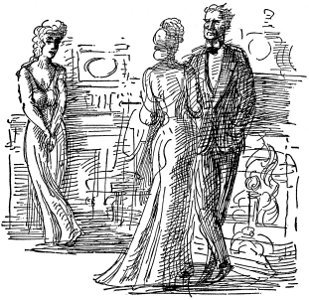

Picadilly, hoşça kal, Leicester Alanı elveda
çok uzun yolumuz var Tipperary'ye
kadın kocasını otelde bir kızla yakaladı
böylesine göreve hayatımızı,
yazgımızı, tüm benliğimizi
varımızı yoğumuzu adayabiliriz, kendisine can veren,
mutluluk veren, en değerli hazinesi olarak sakladığı barışı veren ilkeler için
Amerika'nın kanını akıtma, gücünü akıtma ayrıcalığına kavuştuğu günün geldiğini bilenlerin gururuyla.
Tanrı'nın yardımıyla başka seçeneğimiz yoktur
Çok uzun yolumuz var Tipperary'ye
Çok uzun bir yol varmaya
Çok uzun yolumuz var Tipperary'ye
Gördüğüm en tatlı kıza
hainler dikkat
evanston'da dört adam kuşları öldürdükleri için cezaya çarptırıldı
wılson anlaşma taslağı yapılması için zorlayacak
besinler üzerinde kumar oynayanlar konserve yiyeceklerin fiyatını artırdılar Savaştaki Birleşik Amerika için içki yasağı istendi hava akınları sırasında kurallara uymayanlar cezalandırılacak
joffre daha fazla asker istiyor
mooney davası herkesi coşturdu
Picadilly hoşça kal, Leicester Alanı elveda
Çok uzun yolumuz var Tipperary'ye
Ama benim gönlüm orada
beyaz saray t.r.'nin asker toplamasına karşı
çıkıyor
son zamanlarda Almanya yoluyla İsviçre'den dönmüş bir sürgün olan Nicolay Lenin önderliğinde Radikal Sosyalistlerden oluşmuş bir serseri takımı bugün Amerikan Elçiliği'ne saldırmaya kalkıştı.
müttefikler washıngton'un mezar taşını
bayraklarla donattı
Eleanor Stoddard
Eleanor için o kış, her şey çok coşku vericiydi. J. Ward'la birlikte sık sık çıktılar, bütün Fransız operalarına, gala gecelerine gittiler. Batıda, Elli Altıncı Cadde'de, mezeler yedikleri küçük bir Fransız lokantası buldular. Madison Caddesi'ndeki sergilerde Fransız ressamları görmeye gittiler. J. Ward sanatla ilgilenmeye başladı, her şeye öylesine duygusal bir yaklaşımı vardı ki Eleanor onunla gezmeye bayılıyordu. Kıza kendisi için esin kaynağı olduğunu, onunla konuşurken aklına hep güzel düşünceler geldiğini söylüyordu. Bir erkekle bir kadının, yalnızca duygusal yönü ağırlık taşıyan bir arkadaşlık kuramayacaklarını söyleyen kişilerin nasıl da aptal olduğundan söz ediyorlardı. Her gün birbirlerine Fransızca küçük mektuplar yazıyorlardı. J. Ward'ın böylesine salak, üstelik bir de sakat karısının olması Eleanor'a haksızlık gibi geliyordu, ama çocukları çok sevimliydi, tıpkı babalarınınki gibi mavi gözleri pek hoştu.
Şimdi bütünüyle kendisinin olan bir işyeri, bir şeyler öğrenmek için kendisiyle çalışan iki kız yardımcısı, yapılacak epeyce işi vardı. İşyeri Madison Alanı'nın üstünde Madison Caddesi'ndeydi, kapısında yalnızca kendi adı vardı. Dr. Hutchins emekliye ayrıldığı, aile de Santa Fe'ye taşındığı için artık Eveline'in işle hiçbir ilgisi kalmamıştı. Eveline arada bir ona bir kutu içinde Kızılderili sanatından örnekler, çömlekler, okulda Kızılderili çocukların yaptığı suluboya resimler gönderiyor, Eleanor bunların çok iyi satış yaptığını görüyordu. Öğle sonraları taksiyle kent merkezine inerken Metropolitan Lite Kulesi'ne, Flatiron Binası'na, çelik görünüşlü Manhattan göğündeki ışıklara bakar, kristalleri, yapma çiçekleri, çivit rengi üzerine yaldızlı işlemeleri, sırmalı bordo kadifeleri düşünürdü.
Hizmetçisi çayı hazırlamış, genellikle de genç mimarlardan, ressamlardan oluşan dostlarından birkaçı kendisini bekliyor olurdu. Her zaman dondurmaya benzer zambaklar ya da bir saksı frezya bulunurdu odasında. Yemek için giyinmeye gitmeden önce onlarla biraz konuşurdu. J. W. telefon edip de gelemeyeceğini söylerse çok mutsuz olurdu. Çaya gelmiş olanlardan hâlâ orada kalmış biri varsa ondan oturmasını, evde ne varsa birilikte yemelerini isterdi.
Fransız bayrağı görmek ya da bandonun “Tipperary”yi çalması içini hep büyük coşkularla doldururdu. Bir akşam Sarı Ceket'i üçüncü kez görmeye giderlerken, üzerinde de daha parasını ödemediği, nasıl vereceğini de bilemediği yeni kürk mantosu varken, işyerindeki tüm faturaları, Sutton Place'teki bir varsayım üzerine yeniden döşemeye kalkıştığı evi düşünürken, J. Ward'a adına yatırdığını söylediği bin doları sormak isterken, bu işten para kazanmış olup olmadığını merak ederken bir yandan da hava akınlarından, zehirli gazlardan, kent merkezi üzerinde savaş haberlerinin etkilerinden, gördükleri oyunlardan Mons Okçuları'ndan, New Orleans Kızı'ndan söz ediyorlardı. Eleanor doğaüstü güçlere inandığını söyledi. J. W. Borsadaki terslikleri üstü kapalı anlatıyordu, yüzü yorgundu, kaygılıydı. Akşam kalabalığı içinde Times Alanı'nı geziyorlardı, tepedeki ışıklar bir yanıyor bir sönüyordu. Reklamdaki güzel, küçük, üçgen biçimli adamlar, Wrigley'in tabelası üzerinde cimnastik yapıyordu, ansızın bir laternacı “Marseillaise”i çalmaya başladı, inanılmaz güzellikteydi. Eleanor gözyaşına boğuldu, özveriden, kendini adamaktan konuştular, J. W. kürk mantosunun üstünden kolunu sımsıkı tuttu, laternacıya bir dolar verdi. Tiyatroya vardıklarında Eleanor hemen kadınlar tuvaletine koşup gözlerinin kızarmış olup olmadığına baktı. Hiç de kızarmış değildi gözleri, içlerinde ağır bir duygusal yükün yansıması görülüyordu. Bu yüzden yalnızca boyalarını tazeledi, J. W.'nin, elinde biletlerle kendisini beklediği salona koştu, gri gözleri pırıl pırıldı, yaşlarla doluydu.
Bir gece J. W. gerçekten çok kaygılıydı. Operada Manon'u izlemişlerdi, Eleanor'u evine götürürken karısının ilişkilerini anlamadığını, olay çıkardığını, boşanmaya kalkıştığını söyledi. Eleanor çok kızdı, ilişkilerinin kar gibi temiz olduğunu anlamamak için çok bayağı bir yaradılışta olması gerektiğini söyledi. Gerçekten de öyledir, dedi J. W., çok kaygılıydı, şirket sermayesinin çoğunun karısının annesinde olduğunu, isterse kendisini iflasa sürükleyebileceğini, bunun da boşanmaktan çok daha kötü olduğunu açıkladı. Eleanor bu sözleri büyük bir soğukluk ve kırgınlıkla karşıladı, yuvasını dağıtmaktansa hayatından bütünüyle çıkacağını, güzelim çocuklarına karşı görevleri bulunduğunu söyledi. J. W. onun kendisi için esin kaynağı olduğunu, hayatını onsuz sürdüremeyeceğini anlattı. Sekizinci Cadde'ye vardıklarında, Eleanor'un ağır zambak kokuları içindeki, beyaz, pırıl pırıl oturma odasında enine boyuna dolaşarak ne yapmaları gerektiğini düşündüler. Yığınla sigara içtiler, ama bir karara yaramadılar. J. W. oradan ayrılırken içini çekerek, “Şu an peşime düşmüş bir sürü dedektif var,” dedi ve umutsuzluk içinde uzaklaştı.
O gittikten sonra Eleanor, pencerelerin arasındaki uzun Venedik aynasının önünde dolaştı. Ne yapacağını bilemiyordu. Dekorasyon işi bozulmak üzereydi. Sutton Place'teki evin ödenmesi gereken taksitleri olduğu gibi duruyordu. Bu katın iki aylık kirasını verememişti, sonra kürk mantonun borcu da vardı. Venezuela Petrol stoklarında umulan vurgunu vurabilirse J. W.'nin vereceğini söylediği bin dolarlık hisselere güvenmişti. Bir şeyler ters gitmiş olmalıydı, yoksa J. W. bu paradan söz ederdi. Eleanor yatağına girdi ama uyuyamadı. Bir mağazanın sıkıcı işlerini yapmak zorunda kalacaktı yine. Gitgide bozuluyor, arkadaşlarını yitiriyordu, şimdi de J. W.'yi bırakmak zorunda kalırsa korkunç bir şey olacaktı. Her zaman yaşadığı talihsiz aşkları anlatan zenci hizmetçisi Augustine'i düşündü, keşke kendisi de öyle olsaydı. Belki en başında, her şeyin tam doğru, güzel olmasını isterken yanılmıştı. Ağlamadı, ama gece boyu ağrıyan gözleri fal taşı gibi açık, eflatun tül perdelerinden içeri süzülen sokağın ışığında tavanın çiçekli kabartmalarına bakarak yattı.
Birkaç gün sonra işyerinde, bir eski eşya satıcısının kendisine satmaya çalıştığı İspanyol iskemlelerine bakarken bir telgraf aldı:
tatsız gelişmeler seni görmeliyim telefonu
kullanma beş çayında prens george otelinde
beni bul
İmza yoktu. Adama iskemleleri bırakmasını söyledi, gidince de masasında duran, sarı tohumlu eflatun çiğdemlere bakarak uzun süre durdu. Great Neck'e gidip Mrs. Moorehouse'la konuşmanın yararı olup olmayacağını düşünüyordu, öteki odada perde diken Mrs. Lee'yi çağırdı, ortalığa göz kulak olmasını istedi, öğleden sonra telefon edecekti.
Taksiye binip Pennsylvania İstasyonu'na gitti. Erken gelmiş bir ilkbahar günüydü. İnsanlar sokaklarda paltolarının önü açık yürüyorlardı. Yumuşak eflatun rengi gökyüzünde ipek gibi incecik bulutlar vardı. Kürklerin, paltoların, araba dumanlarının, kat kat giyinmiş insan bedenlerinin kokusuna beklenmedik huş ağacı kokuları karışıyordu. Eleanor, taksinin arka koltuğunda dimdik oturmuş, tırnaklarını gri eldivenli elinin avuçlarına batırıyordu. Kışın, ilkbahar gibi göründüğü bu aldatıcı günlerden nefret ediyordu. Yüzündeki çizgileri ortaya çıkartıyor, çevresindeki her şeyi parçalıyor, ayağını basacağı sağlam yer bırakmıyordu. Gidip Gertrude Moorehouse'la kadın kadına konuşacaktı. Bir rezalet her şeyi yok edebilirdi. Kadınla bir süre konuşursa J. W.'yle aralarında hiçbir şey olmadığına inandırabilirdi onu. Boşanma rezaleti her şeyi bozacaktı. Müşterilerini kaçıracaktı, iflas edecekti, yapabileceği tek şey trenle geriye dönüp teyzesi ve eniştesiyle oturmak olacaktı.
Şoförün parasını verip Long Island Demiryolları'nın merdivenlerinden indi. Kalabalığı yararak danışma masasına doğru yürürken dizleri titriyor, kendini çok yorgun hissediyordu, ikiyi çeyrek geçeye kadar Long Neck'e tren yoktu. Bilet almak için uzun süre kuyrukta bekledi. Adamın biri ayağına bastı. Kuyruktakiler, bilet gişesine doğru çıldırtıcı bir yavaşlıkla ilerliyorlardı. Gişeye ulaştığında bir süre neresi için bilet isteyeceğini hatırlayamadı. Gişedeki memur boncuk gibi gözleriyle ters ters baktı yüzüne. Kafasına yeşil siperlik geçirmişti, solgun yüzünde dudakları aşırı kırmızıydı. Arkasındaki insanlar sabırsızlanıyorlardı. Yün paltolu, elinde ağır bir bavulu olan adam onu itelemeye başlamıştı bile. “Great Neck, gidiş dönüş.” Bileti alır almaz saat beşe kadar oraya gidip dönmesinin olanaksızlığı geldi aklına. Üzerinde siyah, küçük bir desen olan gri ipek cüzdanına koydu bileti. Kendini öldürmeyi düşündü. Yeraltı trenine binip kent merkezine gidecek, asansörle Woolworth Binaları'nın tepesine çıkacak, kendini aşağı atacaktı.
Bunun yerine taksi durağına gitti. Gri kemerlerin arasından koyu kırmızı güneş ışığı süzülüyordu, arabaların çıkardığı mavi egzoz dumanları, ıslak ipek gibi kıvrım kıvrımdı içinde. Taksiye binip Central Park'a gitmesini söyledi. Küçük dalların kimi kırmızıydı, kayın ağaçlarının uzun tomurcuklarında parıltılar vardı, ama çimenler hâlâ kahverengiydi, hendeklerde pis kar yığınları görünüyordu. Şoför sürekli konuşuyor, ne dediği anlaşılmıyordu. Gelişigüzel yanıtlar vermekten bıkmıştı. Metropolitan Sanat Müzesi'nde bırakmasını söyledi. Parasını verirken gazete satan çocuk, “Son baskı!” diye bağırıyordu. Eleanor, bir gazete aldı, bir tane de şoför aldı. Şoförün, “Namussuzum . . .” diye bağırdığını duydu, ama onunla konuşmak zorunda kalmamak için koşarak çıktı merdivenleri. Müzenin sessiz, gümüşsü ışığına dalınca gazeteyi açtı. Matbaa mürekkebinin ekşi kokusu yükseldi, mürekkep hâlâ yapış yapıştı, eldivenine bulaştı.
savaş ilan edildi
Washington'daki gözlemciler birkaç saat içinde savaş açılacağını söylüyorlar.
Almanya'nın notası doyurucu olmaktan bütünüyle uzak.
Gazeteyi bir sıranın üzerinde bırakarak Rodin'in heykellerine bakmaya gitti. Sonra da Çin bölümüne geçti. Beşinci Cadde'ye otobüsle gitme zamanı geldiğinde –taksilere çok para harcadığını düşünüyordu– canlılığına kavuşmuştu. Otobüste gittiği sürece Bronz Çağı'nı hatırlayıp durdu. Otel girişinin havasız, pembemsi ışığında J. W.'yi görünce sıçrayarak yanına koştu. Çenesi kenetlenmişti, mavi gözleri ateşe dikiliydi. En son gördüğü günkünden daha genç duruyordu, “İşte sonunda bu da oldu,” dedi. “Şimdi Washington'a telgraf çekip hükümete hizmetlerimi sundum. Artık demiryollarında grev yapmaya kalkışsınlar da görelim.” “Bu çok görkemli ve korkunç bir şey,” dedi Eleanor. “Yaprak gibi titriyorum.”
Ağır perdelerin arkasında, köşedeki bir masaya yürüdüler. Tam oturacakları sıra bando “Yıldızlarla Süslü Bayrağım”ı çalmaya başladı, ayağa kalkmak zorundaydılar. Otelde büyük bir telaş vardı. Herkes gazetelerin yeni baskılarıyla ortalıkta koşuşturuyor, gülüyor, yüksek sesle konuşuyordu. Birbirini hiç tanımayan kişiler gazetelerini değiş tokuş ediyorlar, savaştan söz ediyorlar, birbirlerinin sigaralarını yakıyorlardı.
Uzun tırnaklı parmakları arasında tarçınlı ekmek tutan Eleanor, “Ne düşünüyorum biliyor musun J. W.?” dedi. “Gidip karınla, kadın kadına, yüz yüze konuşursam durumu daha iyi anlayacaktır. Evinizi döşerken bana çok iyi davranmıştı, çok iyi anlaşmıştık.”
“Washington'a hizmetlerinde olduğumu bildirdim,” dedi J. Ward. “Şimdi işyerime telgrafla yanıt gelmiş olabilir. Gert-rude'un bunun kendisi için bir görev olduğunu anlayacağına güveniyorum.”
“Ben de gitmek istiyorum J. W.,” dedi Eleanor. “Gitmem gerektiğini seziyorum.”
“Nereye?”
“Fransa'ya.”
“Apar topar bir şey yapmaya kalkışma, Eleanor.”
“Hayır, yapmam gerektiğini düşünüyorum . . . Çok iyi bir hemşire olabilirim . . . Hiçbir şeyden korkmuyorum, bunu senin de bilmen gerek J. W.”
Orkestra “Yıldızlarla Süslü Bayrağım”ı, bir kez daha çaldı. Eleanor marşın bir bölümüne alçak, tiz bir sesle katıldı. Uzun süre hiçbir şey yapmadan duramayacak kadar coşku içindeydiler, taksiyle J. W.'nin işyerine gittiler. Orada da büyük bir coşku vardı. Miss Williams ortadaki camdan dışarı bayrak direği çıkarmış, üzerine bayrağı çekiyordu. Eleanor yanına gitti, içtenlikle el sıkıştılar. Soğuk rüzgâr masanın üzerindeki kâğıtları uçuruyor, yazı makinesiyle yazılmış sayfalar, odanın içinde savruluyordu ama kimsenin aldırdığı yoktu. Beşinci Cadde'nin aşağılarından bando “Selam, Selam, Bütün Takım Burada”yı çalarak yaklaşıyordu. Dizi dizi işyeri camlarının hepsi pırıl pırıl aydınlıktı, soğuk rüzgârda bayraklar, direklere çarpıyordu. Kâtipler, daktilo kızlar eğilmiş, bağırıyorlar, anafor yapan rüzgârda döne döne uçuşan kâğıtlar atıyorlardı aşağı.
Biri, “Bu Yedinci Alay,” dedi, hepsi alkışlayıp bağırdılar. Bando pencerenin altında gürültüyle çalıyordu. Askerlerin ayak seslerini duyuyorlardı. Tıkanmış trafikte tüm arabalar korna çalıyordu. Otobüslerin tepesine çıkan insanlar, küçük bayraklar sallıyorlardı. Miss Williams eğilip Eleanor'u yanağından öptü. J. W. yüzünde gururlu bir gülümsemeyle yanlarında durmuş, başlarının üzerinden dışarı bakıyordu.
Bando uzaklaşıp araçlar yine ilerlemeye başlayınca pencereyi indirdiler. Miss Williams dağılmış kâğıtları toplayıp düzenlemeye başladı. J. W. Washington'dan telgraf almıştı, Mr. Wilson'un toplamakta olduğu Kamu Haberleşme Kurulu'nda çalışması onaylanmıştı, sabah gidecekti. Great Neck'e telefon etti, Gertrude'a yemeğe gelmesine izin verip vermeyeceğini sorarak birlikte bir de arkadaşını getireceğini söyledi. Gertrude gelebileceklerini, onları göreceği zamana kadar uyanık kalmayı başaracağını umduğunu söyledi. Savaş haberleri yüzünden o da coşkuluydu, ama bu acıları, kıyımları düşünmenin korkunç baş ağrılarına yol açtığını anlattı.
“İçimde seni Gertrude'a yemeğe götürürsem her şeyin yoluna gireceği sezgisi var,” dedi Eleanor'a. “Sezgilerimde hemen hiç yanılmam.”
“Ah, anlayacağını biliyorum,” dedi Eleanor.
İşyerinden çıkarlarken girişte Mr. Robbins'le karşılaştılar. Ne şapkasını çıkardı ne de ağzından purosunu çekti. Sarhoş gibiydi. “Bu lanet olası durum ne Ward?” dedi. “Savaşa girdik mi, girmedik mi?”
“Girmedikse bile sabaha gireriz,” dedi J. W.
“Tarihin yazdığı en büyük ihanet bu,” dedi Mr. Robbins. O Yaşlı Kılyanak yerine niçin biz Wilson'u seçtik, bu kahrolası karmaşaya bizi sokmasın diye, değil mi?”
“Robbins, senin düşüncene katılmıyorum,” dedi J. W. “Sanırım bizim görevimizdir kurtarmak . . .” Ama Mr. Robbins ardında pis bir viski kokusu bırakarak kapıdan girip içerde gözden kaybolmuştu.
“Ben ona söyleyeceğimi bilirdim,” dedi Eleanor, “eğer içinde bulunduğu durumu görmemiş olsaydım.”
Büyük arabayla Great Neck'e doğru giderlerken korkuyordu. Güneş battıktan sonraki kızıl parıltı hâlâ dağılmamıştı gökyüzünden. Arkalarından esen soğuk rüzgârla Queensboro Köprüsü'nü geçmek, ışıkların, ev dizilerinin, Blackwell Adası'nın mor kitlesinin, buharlı gemilerin, uzun bacaların, elektrik santrallarının mavi ışıklarının üzerinden uçmak gibiydi. Edith Cavell'den, hava akınlarından, bayraklardan, ışıldaklardan, yaklaşan orduların gümbürtüsünden, Jeanne d'Arc'tan söz ettiler. Eleanor kürk mantosunu çenesine çekti. Gertrude Moorehouse'a neler söyleyeceğini düşündü.
Eve vardıklarında olay çıkacağından korktu biraz. Çantasından aldığı küçük aynanın karşısında yüzünün boyasını tazelemek için girişte durdu.
Mrs. Moorehouse çıtır çıtır yanan ateşin başında, uzun bir koltukta oturuyordu. Eleanor çevresine göz attı, buranın döşenişi çok hoşuna gitti. Gertrude Moorehouse onu görünce sapsarı oldu. “Sizinle konuşmak istedim,” dedi Eleanor.
Gertrude Moorehouse ayağa kalkmaksızın elini uzattı. “Kalkamadığım için bağışlayın, Miss Stoddard,” dedi. “Bu korkunç haber yüzünden elim ayağım kesildi.”
“Uygarlık özveri istiyor . . . hepimizden,” dedi Eleanor.
“Elbette şu barbarların yaptıkları korkunç, Belçikalı çocukların ellerini kesmeleri falan,” dedi Gertrude Moorehouse.
“Mrs. Moorehouse,” dedi Eleanor. “Kocanızla olan ilişkimin, böylesine acıklı bir biçimde yanlış anlaşılması konusunu konuşmak için geldim. Eğer bu korkunç söylentilerde gerçek payı olsaydı gelip sizinle yüz yüze konuşabilir miydim? Bizim ilişkimiz daha yere değmemiş kar tanesi gibi tertemiz.”
“Lütfen bu konuyu açmayın, Miss Stoddard. Size inanıyorum.”
J. W. içeri girdiğinde, ateşin iki yanında oturmuşlar, Gertrude'un ameliyatını konuşuyorlardı.
Eleanor ayağa kalktı. “Ah, çok büyük bir şey yaptın,
J. W.,” dedi.
J. W. boğazını temizleyerek bir birine, bir ötekine baktı.
“Bu benim görevim,” dedi.
“Nedir o?” diye sordu Gertrude.
“Savaş süresince uygun görecekleri herhangi bir işte çalışacağımı söyleyerek hükümete hizmetlerimi sundum.”
Gertrude gözlerinde korkulu bir anlatımla, “Ama cephede olmayacaksın, değil mi?” dedi.
“Yarın Washington'a gidiyorum . . . Elbette para almaksızın çalışacağım.”
“Ward, çok soylu bir şey yaptın,” dedi Gertrude. İskemlesinin yanına kadar ağır ağır yürüdü J. W., sonra eğilip karısını alnından öptü. “Hepimiz özveride bulunmalıyız . . . Sevgilim, sana güveniyorum, annene de . . .”

“Elbette Ward, elbette . . . Hepsi aptalca bir yanlış anlamaydı.” Gertrude kıpkırmızı oldu. Ayağa kalktı. “Lanet olası, aptal bir kuşkucuyum . . . ama cepheye gitmemelisin, Ward. Annemle bir daha konuşacağım.” Kocasının yanına gidip ellerini omzuna koydu. Eleanor geriye çekilip duvarın dibinden onlara baktı. Üzerine çok iyi oturan bir ceket giymişti. Gertrude'un kirli sarı gece elbisesi siyahın yanında iyice ortaya çıkıyordu. Odanın uzun fildişi grisi duvarlarına vuran kristal şamdanların ışığında Ward'ın açık renk saçları, küllü gri gibiydi. Yüzü gölgeliydi, çok hüzünlüydü. Eleanor, böyle bir adamı insanların ne kadar az anladıklarını, odanın nasıl güzel, tıpkı bir oyundaki gibi, bir Whistler tablosu, bir Sarah Bernhardt görüntüsü gibi olduğunu düşündü. Tutkudan gözleri buğulandı.
“Ben de Kızılhaç'a katılacağım,” dedi. “Fransa'ya gitmek için sabırsızlanıyorum.”